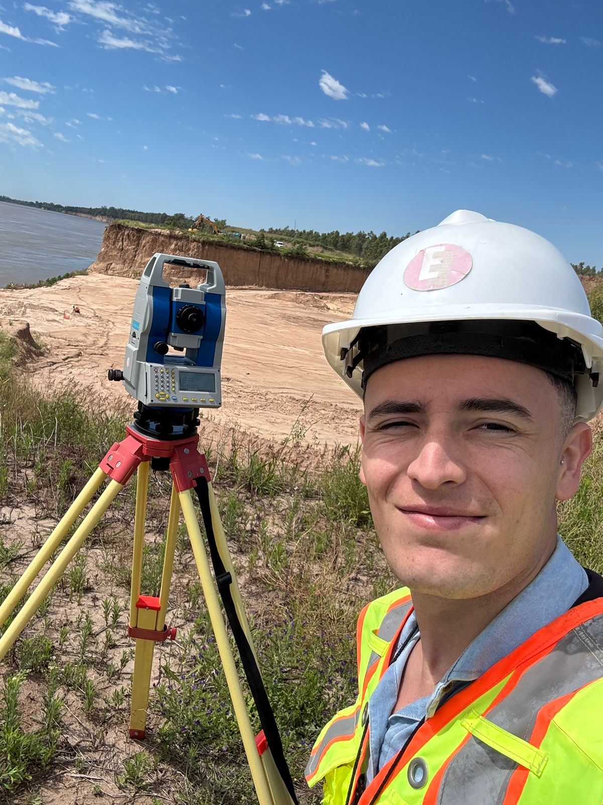

Servicios Profesionales de
Agrimensura y Topografía
Nuestro objetivo es ofrecer soluciones claras y confiables que permitan a particulares, profesionales y empresas tomar decisiones con respaldo técnico. Entendemos que la agrimensura va más allá de la simple medición; implica precisión, responsabilidad y compromiso profesional, y constituye una base fundamental para el desarrollo de proyectos, la planificación territorial y la seguridad jurídica inmobiliaria.

respaldo y
compromiso
Ingeniero Agrimensor
Santino Valido
Profesional matriculado en la provincia de Santa Fe, dedicado a brindar servicios de agrimensura y topografía con responsabilidad y compromiso profesional.
Cada trabajo es abordado con seriedad y rigurosidad, comprendiendo la importancia de la correcta interpretación y representación del territorio. Para ello, cuento con el conocimiento técnico y el respaldo de tecnología de medición moderna, que permite desarrollar cada tarea con confiabilidad y altos estándares de calidad.
Precisión Técnica
Instrumental de última generaciónSeguridad Jurídica
Garantía en cada proyectoServicios Profesionales
Soluciones integrales de agrimensura y topografía adaptadas a las necesidades específicas de cada proyecto.
Mensuras urbanas y rurales
Medición y delimitación de terrenos para garantizar límites claros y seguridad jurídica en áreas urbanas, suburbanas o rurales.
Unificaciones y subdivisiones
División o unificación de parcelas según la normativa vigente, permitiendo el óptimo aprovechamiento del suelo.
VEP (Estado Parcelario)
Confección de Verificación de Estado Parcelario, trámite fundamental y necesario para escrituras y regularización de propiedades.
Propiedad Horizontal (PH)
Servicios técnicos exhaustivos para la creación o regularización legal de regímenes de propiedad horizontal.
Relevamientos
planialtimétricos
Mediciones técnicas de alta precisión, incluyendo la determinación de niveles y características topográficas del terreno.
Amojonamientos
Replanteo y colocación de mojones físicos in situ para materializar y delimitar correctamente los límites legales del terreno.
¿Por qué es importante la agrimensura?
La agrimensura permite determinar con precisión los límites y características del terreno, brindando información técnica confiable para la correcta gestión del territorio y el desarrollo de proyectos.
Un trabajo profesional permite:
Definir con exactitud los límites de una propiedad.
Brindar seguridad jurídica en operaciones inmobiliarias.
Realizar subdivisiones y regularizaciones parcelarias.
Aportar información técnica para proyectos y obras.
Contribuir al ordenamiento y planificación del territorio.
Zona de trabajo
Servicios de agrimensura en el sur de la Provincia de Santa Fe y alrededores.
- Empalme Villa Constitución
- Villa Constitución
- Arroyo Seco
- Rosario y alrededores
- Diferentes localidades de la Pcia. de Santa Fe
Consultar disponibilidad para trabajos e intervenciones en toda la región.
Consultas y Presupuestos
Si necesitás realizar una mensura, subdivisión de terreno o cualquier servicio de agrimensura, podés comunicarte directamente de forma rápida.
Radicación
Provincia de Santa Fe
Argentina
validoagrimensura@gmail.com
Información Legal
Matrícula Profesional N° 2-0560-5